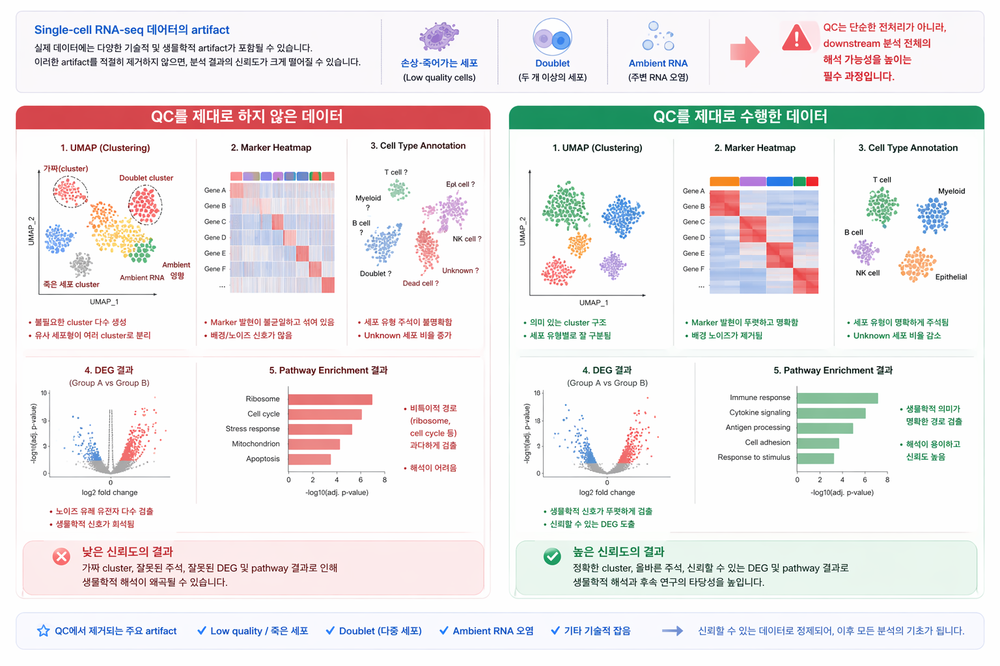
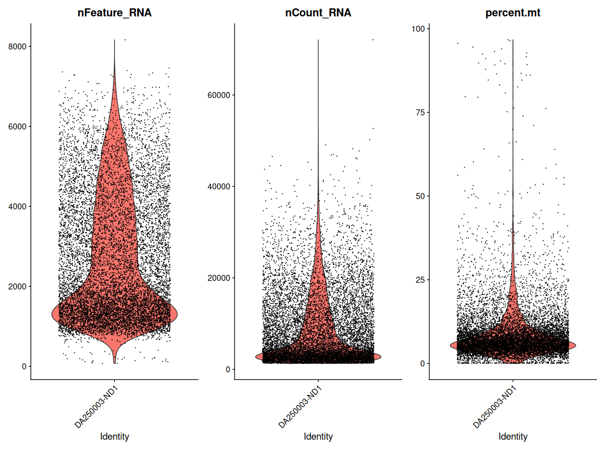
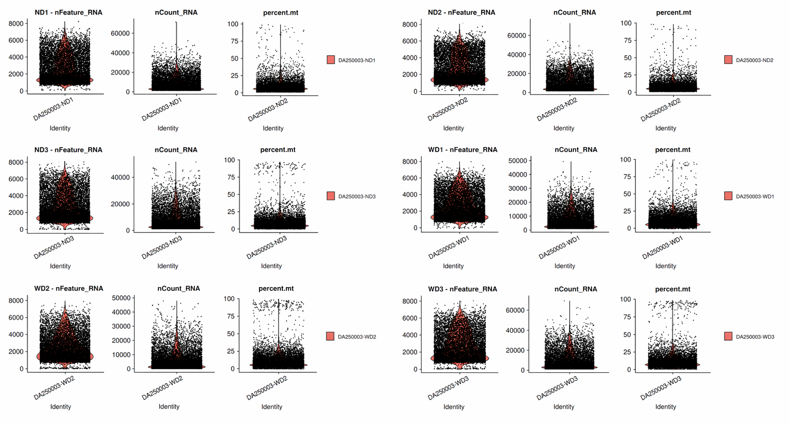
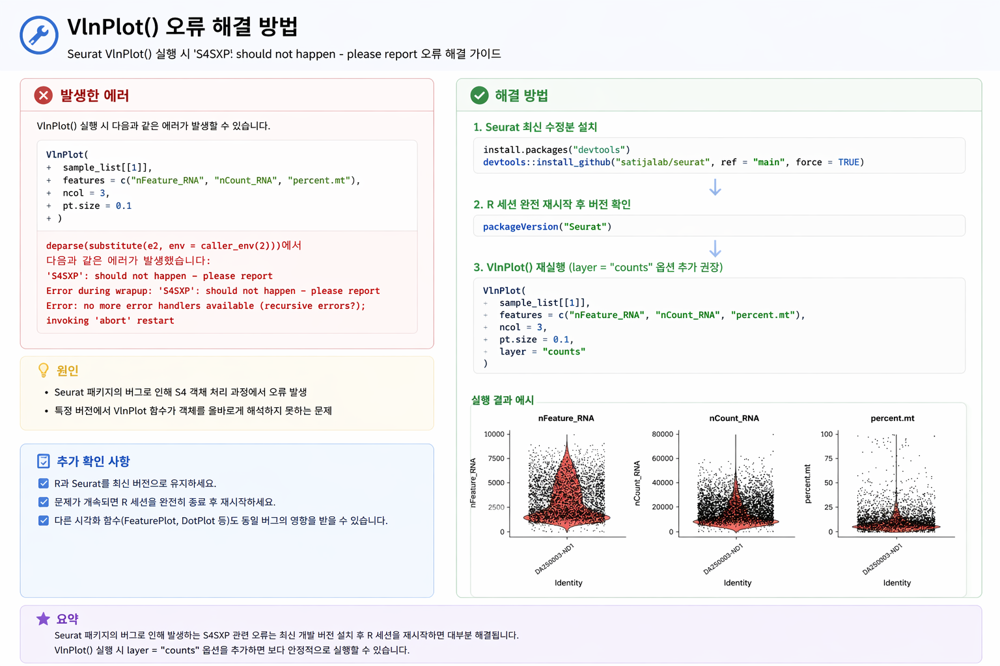
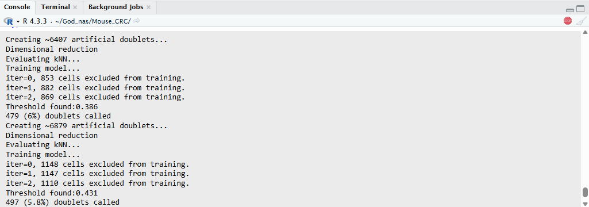

본 단계에서는 single-cell RNA-seq 데이터의 품질을 평가하고, low-quality cell을 제거하는 과정을 수행합니다. QC는 downstream clustering, annotation, DEG 분석의 신뢰도를 결정하는 핵심 단계입니다.
Single-cell RNA-seq 데이터는 개별 세포 수준의 전사체를 측정할 수 있는 강력한 기술이지만, 실제 데이터에는 다양한 기술적 및 생물학적 artifact가 포함될 수 있습니다. 예를 들어 세포 분리 과정에서 손상되거나 죽어가는 세포가 capture될 수 있고, 두 개 이상의 세포가 하나의 droplet에 함께 들어가는 doublet이 발생할 수 있으며, 주변 ambient RNA가 실제 세포의 발현 패턴을 오염시킬 수도 있습니다.
이러한 artifact를 적절히 제거하지 않으면, 이후 단계에서 가짜 cluster가 형성되거나 세포 유형 annotation이 왜곡되고, DEG 결과 역시 신뢰하기 어려워질 수 있습니다. 따라서 QC는 단순한 전처리가 아니라, downstream 분석 전체의 해석 가능성을 높이는 필수 과정입니다.

QC를 수행하지 않은 데이터와 수행한 데이터의 분석 결과 비교 (UMAP, marker, DEG, pathway)
| 항목 | 설명 |
|---|---|
| Low-quality / damaged cells | 유전자 수가 지나치게 적거나 mitochondrial gene 비율이 높아, 정상 세포 상태를 반영하지 못할 수 있습니다. |
| Doublets / multiplets | 둘 이상의 세포가 하나의 droplet에 함께 들어가 혼합된 발현 패턴을 보입니다. |
| Ambient RNA | 주변에 떠다니는 RNA가 droplet에 섞여 들어가 실제 세포 발현을 오염시킬 수 있습니다. |
| Dissociation stress | 조직 분리 과정 자체가 스트레스 반응 유전자를 유도하여 인위적인 transcriptome 변화를 만들 수 있습니다. |
Seurat 기반 QC에서는 보통 다음 세 가지 지표를 가장 먼저 확인합니다.
일반적으로 nFeature_RNA가 지나치게 낮은 세포는 low-quality cell일 가능성이 있고, 반대로 지나치게 높은 세포는 doublet을 의심할 수 있습니다. percent.mt가 높은 세포는 손상되었거나 stressed 상태일 가능성이 높습니다.
QC filtering 기준에는 절대적인 정답이 없습니다. 실제 연구에서는 tissue type, cell type composition, species, sequencing depth, dissociation protocol, disease context에 따라 서로 다른 기준이 사용됩니다.
예를 들어 종양 조직은 스트레스가 높아 mitochondrial gene 비율이 상대적으로 높게 나타날 수 있고, 면역세포는 다른 세포 유형보다 검출 유전자 수가 적을 수 있습니다. 따라서 threshold는 “문헌값을 그대로 복사”하기보다, 데이터 분포를 먼저 확인한 뒤 합리적으로 조정해야 합니다.
| 지표 | 낮은 값이 의미할 수 있는 것 | 높은 값이 의미할 수 있는 것 | 판단 방법 |
|---|---|---|---|
nFeature_RNA |
빈 droplet, 손상된 세포, RNA가 적은 세포 | RNA가 풍부한 세포 또는 doublet/multiplet | 샘플별 분포의 낮은 꼬리와 높은 꼬리를 확인 |
nCount_RNA |
낮은 library size, 낮은 sequencing depth | RNA 함량이 높은 세포 또는 여러 세포가 함께 포획된 droplet | nFeature_RNA와 함께 확인 |
percent.mt |
일반적으로 양호하지만 조직별 차이가 있음 | 세포막 손상, stress 또는 dying cell 가능성 | 조직과 세포 유형을 고려하여 상한 설정 |
한 지표만으로 세포를 제거하지 말고 세 지표의 분포와 상관관계를 함께 확인합니다. 가능한 경우 샘플별 median과 MAD, knee point 또는 극단값 분포도 참고할 수 있습니다.
본 실습에서는 mouse colorectal cancer 6개 샘플
(ND1, ND2, ND3, WD1, WD2, WD3)을 사용합니다.
각 샘플은 이미 Seurat object로 불러와 sample_list로 정리한 상태를 가정합니다.
이번 단계에서는 각 샘플에 대해 mitochondrial gene 비율을 계산하고, 분포를 시각화한 뒤, 동일한 기준으로 샘플별 filtering을 수행합니다.
mouse 데이터이므로 mitochondrial gene prefix는 보통 mt- 형식을 사용합니다.
sample_list <- lapply(sample_list, function(obj) {
obj[["percent.mt"]] <- PercentageFeatureSet(obj, pattern = "^mt-")
return(obj)
})
먼저 개별 샘플에서 QC 지표 분포를 확인합니다. 아래 예시는 ND1 샘플의 violin plot입니다.
VlnPlot(
sample_list[[1]],
features = c("nFeature_RNA", "nCount_RNA", "percent.mt"),
ncol = 3,
pt.size = 0.1
)

ND1 샘플의 QC 분포 예시. 각 점은 하나의 세포이며, violin의 폭은 해당 값 구간에 존재하는 세포의 상대적 밀도를 나타냅니다.
nFeature_RNA와 nCount_RNA가 매우 낮은 세포는 low-quality cell 후보입니다.percent.mt가 높은 세포는 손상 또는 stress 가능성이 있어 상한 기준을 검토합니다.실제 분석에서는 모든 샘플에 대해 같은 분포를 확인하는 것이 좋습니다.
for (nm in names(sample_list)) {
print(
VlnPlot(
sample_list[[nm]],
features = c("nFeature_RNA", "nCount_RNA", "percent.mt"),
ncol = 3,
pt.size = 0.1
) + ggtitle(nm)
)
}

6개 mouse CRC 샘플(ND1~3, WD1~3)의 QC violin plot 예시. 각 샘플의 nFeature_RNA, nCount_RNA, percent.mt 분포를 비교할 수 있습니다.
일부 환경에서 VlnPlot() 실행 시 아래와 같은 에러가 발생할 수 있습니다.
이는 Seurat 패키지 버전 문제 또는 내부 S4 객체 처리 오류로 인해 발생하는 경우가 많습니다.
'S4SXP': should not happen - please report
Error during wrapup
Error: no more error handlers available

VlnPlot 실행 오류 및 해결 방법 요약
layer = "counts" 옵션을 추가하여 다시 실행합니다.# R session 재시작 후 Step 1의 패키지 로드 코드를 먼저 실행
packageVersion("Seurat")
# counts layer를 지정하여 VlnPlot 재실행
VlnPlot(
sample_list[[1]],
features = c("nFeature_RNA", "nCount_RNA", "percent.mt"),
ncol = 3,
pt.size = 0.1,
layer = "counts"
)
layer 개념이 도입되었습니다.
따라서 일부 plotting 함수에서 layer="counts" 옵션을 명시하면
더 안정적으로 실행됩니다.
샘플 수가 많을 경우 각 plot을 개별적으로 출력하면 비교가 불편할 수 있습니다.
이럴 때는 patchwork 패키지를 이용해 여러 결과를 하나의 figure로 정리하면
샘플 간 QC 분포를 훨씬 쉽게 비교할 수 있습니다.
plot_list <- lapply(names(sample_list), function(nm) {
VlnPlot(
sample_list[[nm]],
features = c("nFeature_RNA", "nCount_RNA", "percent.mt"),
ncol = 3,
pt.size = 0.1
) + ggtitle(nm)
})
final_plot <- wrap_plots(plot_list, ncol = 6) &
theme(
plot.margin = margin(2, 2, 2, 2),
panel.spacing = unit(0.2, "lines"),
text = element_text(size = 7)
)
final_plot
ncol, 글자 크기, margin, panel spacing을 조정하면 figure 가독성을 높일 수 있습니다.png, pdf)을 반드시 다시 확인하는 것이 좋습니다.
여기서는 실습용 예시로 다음 기준을 사용합니다.
이 값은 하나의 예시이며, 실제 연구에서는 샘플 분포와 조직 특성을 고려해 조정할 수 있습니다.
sample_list_filtered <- lapply(sample_list, function(obj) {
subset(
obj,
subset =
nFeature_RNA > 200 &
nFeature_RNA < 6000 &
percent.mt < 10
)
})
nFeature_RNA > 200: 검출 유전자가 지나치게 적은 empty droplet 또는 low-quality cell을 제거합니다.nFeature_RNA < 6000: 유전자 수가 비정상적으로 높은 세포를 줄입니다. 다만 이는 doublet을 간접적으로 줄이는 기준일 뿐, 별도의 doublet 탐지를 대체하지 않습니다.percent.mt < 10: mitochondrial transcript 비율이 높은 손상·stress 세포를 제거합니다.이 기준은 본 실습 데이터에 적용하는 예시입니다. 실제 연구에서는 필터 전 분포, 필터 후 제거 비율, 조직 특성 및 보존하려는 세포 유형을 함께 검토해야 합니다. 특정 샘플에서 세포가 과도하게 제거된다면 동일한 숫자를 기계적으로 적용하지 말고 기준을 다시 확인합니다.
# filtering 전 cell 수
before_cells <- sapply(sample_list, ncol)
# filtering 후 cell 수
after_cells <- sapply(sample_list_filtered, ncol)
qc_summary <- data.frame(
sample = names(before_cells),
before = before_cells,
after = after_cells,
removed = before_cells - after_cells
)
qc_summary
이 표를 통해 기본 QC filtering으로 각 샘플에서 얼마나 많은 세포가 제거되었는지 확인합니다. 특정 샘플에서 제거 비율이 지나치게 높다면 threshold와 QC 분포를 다시 점검합니다.
이후 분석에서 객체 이름을 일관되게 사용하기 위해 filtering 결과를 다시
sample_list에 저장하고 임시 객체를 제거합니다.
sample_list <- sample_list_filtered
rm(sample_list_filtered)
names(sample_list)
Doublet은 하나의 droplet에 두 개 이상의 세포가 함께 포획된 경우입니다. 서로 다른 세포 유형이 섞이면 인위적인 발현 패턴과 잘못된 cluster를 만들 수 있으므로 기본 QC와 별도로 탐지하는 것이 좋습니다. 여기서는 Bioconductor의 scDblFinder를 사용합니다.
lapply()로 각 Seurat object를 처리하면 이 원칙을 자연스럽게 지킬 수 있습니다.
SingleCellExperiment과 scDblFinder는 Step 1에서 이미 불러온 상태이므로
여기서는 바로 분석을 시작합니다.
set.seed(1234)
sample_list_doublet <- lapply(sample_list, function(obj) {
# Seurat object를 SingleCellExperiment 형식으로 변환
sce <- as.SingleCellExperiment(obj, assay = "RNA")
# 각 생물학적 샘플에서 독립적으로 doublet 탐지
sce <- scDblFinder(sce)
# 결과를 Seurat metadata에 다시 저장
obj$scDblFinder.score <- sce$scDblFinder.score
obj$scDblFinder.class <- sce$scDblFinder.class
return(obj)
})
# 샘플별 singlet / doublet 개수 확인
doublet_summary <- lapply(sample_list_doublet, function(obj) {
table(obj$scDblFinder.class)
})
doublet_summary

scDblFinder 실행 화면 예시. 각 샘플에서 artificial doublet 생성, 차원 축소, k-nearest neighbor 평가와 model training이 순차적으로 수행되며, 마지막에 적용된 threshold와 예측된 doublet 수 및 비율이 출력됩니다.
Creating artificial doublets: 실제 세포를 조합하여 학습용 가상 doublet을 생성합니다.Evaluating kNN: 실제 세포와 artificial doublet의 이웃 관계를 평가합니다.Training model: 분류 모델을 반복 학습합니다.Threshold found: singlet과 doublet을 구분하는 자동 기준점입니다.doublets called: 해당 샘플에서 예측된 doublet 수와 비율입니다.
scDblFinder.score는 doublet 가능성을 나타내는 점수이고,
scDblFinder.class는 자동으로 분류된 singlet 또는
doublet 결과입니다. 10x 기반 데이터에서는 expected doublet rate를
자동 추정할 수 있지만, 사용한 chemistry와 실제 loading 조건을 알고 있다면 결과가 합리적인지 함께 확인해야 합니다.
# singlet cell만 남기고 sample_list 갱신
sample_list <- lapply(sample_list_doublet, function(obj) {
singlet_cells <- colnames(obj)[
obj$scDblFinder.class == "singlet"
]
subset(obj, cells = singlet_cells)
})
# doublet 제거 전후 cell 수 비교
doublet_cell_summary <- data.frame(
sample = names(sample_list_doublet),
before_doublet_filter = sapply(sample_list_doublet, ncol),
singlet = sapply(sample_list, ncol)
)
doublet_cell_summary$removed_doublet <-
doublet_cell_summary$before_doublet_filter -
doublet_cell_summary$singlet
doublet_cell_summary
for (nm in names(sample_list)) {
print(
VlnPlot(
sample_list[[nm]],
features = c("nFeature_RNA", "nCount_RNA", "percent.mt"),
ncol = 3,
pt.size = 0.1
) + ggtitle(paste0(nm, " (singlet)"))
)
}
filtering 후에는 분포가 더 안정적으로 정리되었는지 다시 확인하는 것이 중요합니다.
sample_list에는 기본 QC filtering과 doublet 제거를 모두 통과한
singlet cell만 남아 있습니다. 이후 정규화 단계에서는 이 객체를 그대로 사용합니다.
# doublet 판정 결과를 담았던 임시 list 제거
rm(sample_list_doublet)
names(sample_list)
아래 코드는 Step 1에서 생성한 sample_list를 그대로 이어받아
mitochondrial 비율 계산, QC filtering, scDblFinder 실행 및 singlet 선택까지 수행하는 통합 코드입니다.
앞의 단계별 설명을 확인한 다음 위에서부터 순서대로 실행합니다.
scDblFinder()는 샘플 수와 세포 수에 따라 시간이 걸릴 수 있습니다.
Console에 artificial doublet 생성과 model training 메시지가 출력되는 동안 중단하지 마세요.
# ============================================================
# Step 02. QC filtering과 doublet 제거
# Step 01에서 생성한 sample_list를 이어서 사용
# ============================================================
# 1. Mouse mitochondrial gene 비율 계산
sample_list <- lapply(sample_list, function(obj) {
obj[["percent.mt"]] <- PercentageFeatureSet(
obj,
pattern = "^mt-"
)
return(obj)
})
# 2. Filtering 전 샘플별 세포 수 저장
before_qc_cells <- sapply(sample_list, ncol)
# 3. ND1의 QC 지표 분포 확인
VlnPlot(
sample_list[[1]],
features = c("nFeature_RNA", "nCount_RNA", "percent.mt"),
ncol = 3,
pt.size = 0.1
)
# 4. 6개 sample에 동일한 기본 QC 기준 적용
sample_list_filtered <- lapply(sample_list, function(obj) {
subset(
obj,
subset =
nFeature_RNA > 200 &
nFeature_RNA < 6000 &
percent.mt < 10
)
})
# 5. QC filtering 전후 세포 수 비교
after_qc_cells <- sapply(sample_list_filtered, ncol)
qc_summary <- data.frame(
sample = names(before_qc_cells),
before = as.integer(before_qc_cells),
after = as.integer(after_qc_cells),
removed = as.integer(before_qc_cells - after_qc_cells),
removed_percent = round(
100 * (before_qc_cells - after_qc_cells) / before_qc_cells,
2
),
row.names = NULL
)
qc_summary
# 6. 이후 분석 객체를 sample_list라는 이름으로 통일
sample_list <- sample_list_filtered
rm(sample_list_filtered)
# 7. 각 생물학적 sample에서 독립적으로 doublet 탐지
# SingleCellExperiment과 scDblFinder는 사전에 설치되어 있어야 함
set.seed(1234)
sample_list_doublet <- lapply(sample_list, function(obj) {
sce <- as.SingleCellExperiment(
obj,
assay = "RNA"
)
sce <- scDblFinder(sce)
obj$scDblFinder.score <- sce$scDblFinder.score
obj$scDblFinder.class <- sce$scDblFinder.class
return(obj)
})
# 8. 샘플별 singlet과 doublet 판정 결과 확인
doublet_summary <- lapply(sample_list_doublet, function(obj) {
table(obj$scDblFinder.class)
})
doublet_summary
# 9. Singlet cell만 선택하고 sample_list 갱신
sample_list <- lapply(sample_list_doublet, function(obj) {
singlet_cells <- colnames(obj)[
obj$scDblFinder.class == "singlet"
]
subset(obj, cells = singlet_cells)
})
# 10. Doublet 제거 전후 세포 수 비교
doublet_cell_summary <- data.frame(
sample = names(sample_list_doublet),
before_doublet_filter = as.integer(
sapply(sample_list_doublet, ncol)
),
singlet = as.integer(
sapply(sample_list, ncol)
),
row.names = NULL
)
doublet_cell_summary$removed_doublet <-
doublet_cell_summary$before_doublet_filter -
doublet_cell_summary$singlet
doublet_cell_summary$doublet_percent <- round(
100 * doublet_cell_summary$removed_doublet /
doublet_cell_summary$before_doublet_filter,
2
)
doublet_cell_summary
# 11. 임시 객체 정리
rm(sample_list_doublet)
# 12. Step 03으로 넘길 최종 객체 확인
names(sample_list)
sapply(sample_list, ncol)
# Filtering과 doublet 제거 후 QC 분포 재확인
for (nm in names(sample_list)) {
print(
VlnPlot(
sample_list[[nm]],
features = c("nFeature_RNA", "nCount_RNA", "percent.mt"),
ncol = 3,
pt.size = 0.1
) + ggtitle(paste0(nm, " (singlet)"))
)
}
qc_summary에서 샘플별 QC filtering 전후 세포 수와 제거 비율을 확인합니다.doublet_summary에서 각 샘플의 singlet 및 doublet 판정 수를 확인합니다.doublet_cell_summary에서 doublet 제거 비율이 샘플 간 크게 다르지 않은지 확인합니다.sample_list에는 QC와 doublet 제거를 통과한 singlet cell만 남아 있어야 합니다.qc_summary를 이용하여 기본 QC에서 제거된 세포 비율이 가장 높은 sample을 찾아보세요.
doublet_cell_summary를 이용하여 예측 doublet 비율이 가장 높은 sample을 찾아보세요.
nFeature_RNA < 5000을 적용했을 때 남는 세포 수를 계산하고,
현재 기준인 nFeature_RNA < 6000 결과와 비교해 보세요.
원본 sample_list는 덮어쓰지 말고 별도의 객체에 저장합니다.
nFeature_RNA, nCount_RNA, percent.mt입니다.scDblFinder를 각 생물학적 샘플에서 독립적으로 실행하고 singlet cell만 다음 단계로 전달합니다.